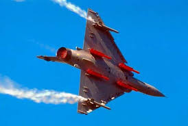

| length | 14 m |
| width | 9.13 m |
| speed | 2,336 km/h. |
| radar range | 100 km |
| combat radius | 1,550 km (960 miles) in a standard air-to-air interception configuration to 1,000-1,200 km (620-745 miles) for air-to-ground missions with a mixed payload.. |
| wepons | air-to-air missiles like the MICA and Magic, air-to-ground missiles such as the AS30L and SCALP, and various guided and unguided bombs |
| made in | French |
ThursterThe Mirage 2000 is powered by the Snecma M53-P2 turbofan engine, a single-shaft, afterburning engine that provides high thrust and excellent performance for the aircraft. Designed for both high-speed interception and ground attack missions, the M53-P2 delivers about 21,400 lbf of thrust with afterburner, enabling the Mirage 2000 to reach speeds over Mach 2. Its reliable and simple design contributes to the fighter’s agility, fast acceleration, and ease of maintenance, making it a key component of the Mirage 2000’s enduring effectiveness in air forces around the world.. |  |
 |
AIR BrakesThe Mirage 2000 is equipped with effective air brakes located on the upper and lower surfaces of the
rear fuselage. These hydraulically operated panels deploy symmetrically to increase drag and rapidly
reduce the aircraft's speed during high-speed flight or landing approaches. Their design allows the
pilot to decelerate quickly without significantly affecting aircraft stability, making them
essential for precise maneuvering during combat and landing operations.. |